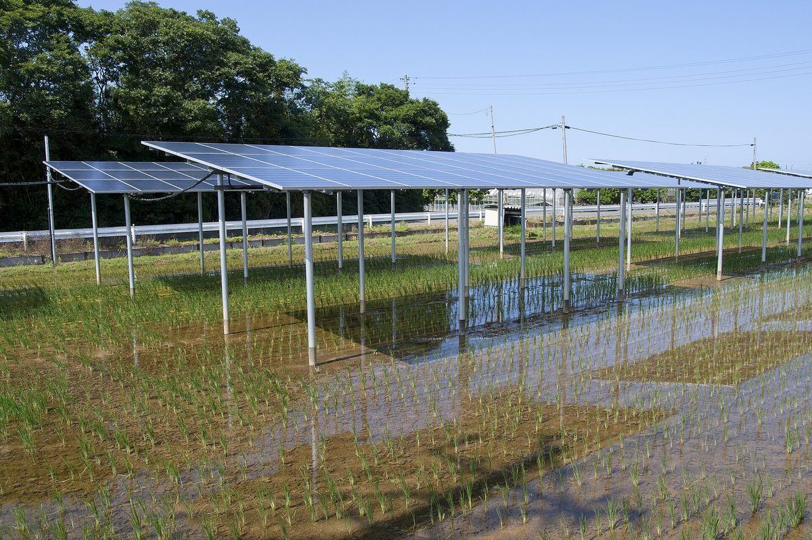

한국영농형태양광협회·한국탄소중립농업협회, 햇빛소득마을 공동 추진 협약…영농형 태양광에 탄소중립농업·마을사회적경제 묶겠다

23일 사업협력 MOU, 표준모델 개발·시범마을 발굴 등 7개 분야 협력…시범마을·사업비·수익배분은 아직 정하지 않고 별도 협약으로
(사)한국영농형태양광협회(회장 김창한)와 (사)한국탄소중립농업협회(이사장직무대행 황병대)가 지난 23일 '지속가능한 마을사회적경제 구축형 햇빛소득마을'을 함께 추진하기로 하는 사업협력 협약(MOU)을 맺었다. 두 단체는 햇빛소득마을을 발전수익 사업에 그치지 않고 영농형 태양광과 탄소중립농업, 농산물 유통, 탄소시장, 마을사회적경제를 엮는 농촌경제 모델로 넓히겠다는 구상이며, 표준모델 개발, 시범마을 발굴·실증, 정부·지자체 정책사업 공동 대응, 마을사회적경제조직 육성 등 7개 분야에서 협력하기로 했다. 역할은 영농형태양광협회가 정책·기술 자문과 설계·시공 지원, 사업성 검토, 유지관리 체계를, 탄소중립농업협회가 탄소중립농업 전환모델과 농산물 인증·유통, 탄소감축 측정·보고·검증(MRV), 농업 탄소크레딧 사업모델 발굴을 나눠 맡는다. 두 단체는 정부·지자체 공모에 함께 참여하고 필요하면 사업별 컨소시엄과 '햇빛소득마을 공동추진협의체'를 꾸리기로 했으며, 주민 참여와 수용성 확보, 영농 지속성 보장, 수익의 투명한 관리와 마을공동체 이익 환원을 원칙으로 내세웠다. 협약 유효기간은 2년이고, 시범마을과 개별 사업의 투자비·사업비·수익배분은 아직 정해지지 않아 별도 협약으로 정하기로 했다.
시민에너지 관점
일본은 2013년 농지를 일시 전용하는 허가로 영농형 태양광(솔라셰어링)의 길을 열면서, 패널 아래 수확량이 그 지역 평균보다 크게 줄지 않아야 허가를 이어 갈 수 있도록 해 농사가 발전의 들러리가 되지 않게 했다. 전문 단체들이 컨소시엄을 꾸려 공모에 나서면 마을은 이름만 빌려주고 설계·시공·탄소크레딧 수익은 바깥으로 흘러나갈 수 있다는 우려가 나올 수 있다. 그래서 이 협약이 내건 마을공동체 이익 환원이 말로 끝나지 않으려면, 마을사회적경제조직이 발전설비의 지분과 의결권을 직접 가져 수익이 자산으로 마을에 남는 구조여야 한다. 수익배분을 별도 협약으로 미룬 지금, 시범마을을 고르기 전에 주민 지분과 수익배분 기준부터 공개하는 것이 순서다.
출처: SDG뉴스 2026-10-27 서욱 원문 보기
韓国営農型太陽光協会・韓国カーボンニュートラル農業協会、日差し所得村の共同推進で協約…営農型太陽光にカーボンニュートラル農業・集落の社会的経済を組み合わせる構想
23日に事業協力MOU、標準モデル開発・モデル村の発掘など7分野で協力…モデル村・事業費・収益配分はまだ決めず別途の協約で
社団法人韓国営農型太陽光協会（キム・チャンハン会長）と社団法人韓国カーボンニュートラル農業協会（ファン・ビョンデ理事長職務代行）は23日、「持続可能な集落社会的経済構築型の日差し所得村（ヘッビッ・ソドゥク・マウル）」を共同で推進する事業協力協約（MOU）を結んだ。両団体は日差し所得村を発電収益事業にとどめず、営農型太陽光とカーボンニュートラル農業、農産物流通、炭素市場、集落の社会的経済を結び付けた農村経済モデルへ広げる構想で、標準モデルの開発、モデル村の発掘・実証、政府・自治体の政策事業への共同対応、集落の社会的経済組織の育成など7分野で協力することにした。役割は、営農型太陽光協会が政策・技術の助言、設計・施工の支援、事業性の検討、維持管理体制を、カーボンニュートラル農業協会がカーボンニュートラル農業への転換モデル、農産物の認証・流通、炭素削減の測定・報告・検証（MRV）、農業分野の炭素クレジット事業モデルの発掘を分担する。両団体は政府・自治体の公募に共同で参加し、必要に応じて事業ごとのコンソーシアムと「日差し所得村共同推進協議体」をつくることにし、住民参加と受容性の確保、営農の継続性の保障、収益の透明な管理と集落共同体への利益還元を原則に掲げた。協約の有効期間は2年で、モデル村や個別事業の投資費・事業費・収益配分はまだ決まっておらず、別途の協約で定めることにした。
市民エネルギーの視点
日本は2013年、農地の一時転用許可によって営農型太陽光（ソーラーシェアリング）に道を開く際、パネルの下の収穫量が地域の平均より大きく減らないことを許可継続の条件とし、農業が発電の添え物にならないようにした。専門団体がコンソーシアムを組んで公募に臨めば、村は名前を貸すだけで、設計・施工や炭素クレジットの収益は外へ流れ出かねないという懸念も出るだろう。だからこそ、この協約が掲げる集落共同体への利益還元が掛け声で終わらないためには、集落の社会的経済組織が発電設備の持ち分と議決権を直接持ち、収益が資産として村に残る仕組みでなければならない。収益配分を別途の協約に先送りした今こそ、モデル村を選ぶ前に住民の持ち分と収益配分の基準をまず公開するのが筋だ。
出典: SDGニュース（SDG News） 2026-10-27 ソ・ウク 原文を読む
韩国农光互补协会与韩国碳中和农业协会签署阳光收入村共同推进协议…拟将农光互补与碳中和农业、村级社会经济相结合
23日签署业务合作MOU，在标准模式开发、示范村发掘等7个领域合作…示范村、项目费用和收益分配尚未确定，将另签协议
社团法人韩国农光互补协会（会长Kim Chang-han）与社团法人韩国碳中和农业协会（代理理事长Hwang Byung-dae）23日签署业务合作协议（MOU），共同推进"可持续村级社会经济构建型阳光收入村"。两团体计划让阳光收入村不止于发电收益项目，而是扩展为将农光互补、碳中和农业、农产品流通、碳市场和村级社会经济结合起来的农村经济模式，并商定在标准模式开发、示范村发掘与实证、共同应对政府和地方政府政策项目、培育村级社会经济组织等7个领域开展合作。分工方面，农光互补协会负责政策与技术咨询、设计施工支持、项目可行性评估和运维体系，碳中和农业协会负责碳中和农业转型模式、农产品认证与流通、减碳的测量、报告与核查（MRV）以及发掘农业碳信用项目模式。两团体将共同参与政府和地方政府的公开征集，必要时按项目组建联合体和"阳光收入村共同推进协议体"，并将确保居民参与和接受度、保障持续耕作、透明管理收益以及向村庄共同体返还实际利益列为原则。协议有效期为2年，示范村以及各项目的投资、项目费用和收益分配尚未确定，将通过另行签订的协议约定。
市民能源视角
日本在2013年通过农地临时转用许可为农光互补（Solar Sharing）开路时，把光伏板下的收成不得比当地平均水平大幅减少作为延续许可的条件，避免农业沦为发电的陪衬。若由专业团体组建联合体参与征集，难免有人担心村庄只是出借名义，设计施工和碳信用收益却流向外部。正因如此，要让这份协议所标榜的向村庄共同体返还利益不止于口号，就必须由村级社会经济组织直接持有发电设施的股份和表决权，让收益作为资产留在村里。在收益分配被推迟到另行协议的当下，理应先在挑选示范村之前公开居民持股和收益分配的标准。
来源: SDG News 2026-10-27 Seo Wook 查看原文
Korea Agrivoltaic Association and Korea Carbon Neutral Agriculture Association sign pact to jointly pursue sunlight income villages combining agrivoltaics, low-carbon farming and village social economy
Business cooperation MOU signed on the 23rd covers seven areas including a standard model and pilot villages; pilot sites, project costs and revenue sharing are yet to be decided in separate agreements
The Korea Agrivoltaic Association, chaired by Kim Chang-han, and the Korea Carbon Neutral Agriculture Association, led by acting chair Hwang Byung-dae, signed a business cooperation memorandum of understanding (MOU) on the 23rd to jointly pursue what they call "sustainable village social economy-building sunlight income villages." The two groups aim to expand the programme beyond a source of electricity income into a rural economic model that links agrivoltaics with low-carbon farming, produce distribution, carbon markets and the village social economy, and agreed to cooperate in seven areas including developing a standard model, finding and testing pilot villages, jointly responding to central and local government programmes, and fostering village social economy organisations. Under the division of roles, the agrivoltaic association will handle policy and technical advice, design and construction support, feasibility reviews and maintenance systems, while the carbon neutral agriculture association will take on transition models for low-carbon farming, certification and distribution of produce, measurement, reporting and verification (MRV) of emission cuts, and developing agricultural carbon credit business models. The groups will bid together in central and local government competitions, form project consortia and a joint promotion council for sunlight income villages where needed, and set out as principles resident participation and acceptance, guaranteed continuity of farming, transparent management of revenue and real returns to village communities. The agreement runs for two years, and the pilot villages and each project's investment, costs and revenue sharing have not yet been decided and will be set in separate agreements.
Citizen Energy View
When Japan opened the way for solar sharing in 2013 through temporary farmland conversion permits, it made continued permission depend on crop yields under the panels not falling far below the local average, so that farming would not become a mere backdrop to power generation. Some may worry that when specialist groups form consortia to bid for programmes, villages will merely lend their names while design, construction and carbon credit income flow outward. That is why, if this agreement's promise of returns to village communities is to be more than words, village social economy organisations must directly hold equity and voting rights in the generating facilities so that the revenue stays in the village as an asset. With revenue sharing deferred to separate agreements, the right order is to publish standards for resident ownership and revenue distribution before any pilot village is chosen.
Source: SDG News 2026-10-27 Seo Wook Read the original